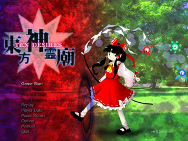

虚伝から蘇る弾幕
東方神霊廟 ～ Ten Desires.

「東方神霊廟 ～ Ten Desires.」は少女弾幕シューティング（ＳＴＧ）です。
今作品は敵を倒して避けてまったりする内容です。
＊このゲームには過激な弾幕シーンが含まれております
小さなお子様や、弾幕アレルギーの方は医師に相談してください。
動作環境
必須環境
ＯＳ
Windows XP/VISTA/7
DirectX ランタイム (June 2010) 以降の最新版がインストールされていること
ＣＰＵ
十分な速度を持ったCPU(例 Intel Core iシリーズ等)
ビデオカード
DirectGraphic 対応の高速なビデオカード(推奨 VRAM 256M以上)
推奨環境
サウンド
Direct Sound対応のサウンドカード
その他
パッドコントローラ
ある程度の弾幕免疫
欲深き魂
バグなどありましたら
zun@big.jp
まで報告していただける
と嬉しいです。
１．概要
２．バックストーリー
３．プレイヤーキャラ紹介
４．操作方法
５．タイトル画面
６．ゲームシステム
作者のページへ
プログラム本体、イメージデータ、曲データ、及びマニュアル全ての著作権は製作者ＺＵＮにあります。
著作者の許可無しで複製、転載、配布を禁じます。
2011 (C)opyright ZUN. All rights reserved.